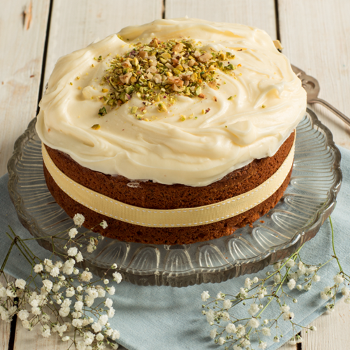

Back to Odin Recipes
Carrot Cake recipe

Description
Carrot cake recipe - well actuall its Bolognese. All on a webpage that includes a description with two whole paragraphs
Yes... two whole paragraphs
Ingredients
- 500g Beef mince
- 500g Pork mince
- 2 medium sized onions
- 3 medium sized carrots
- 3 sticks of celery
- 500g Passata
- 3Tbps Tomato paste
- 150ml Red wine
- 250ml Beef stock
- Splash of olive oil"
Steps
- Splash of olive oil in large pan over medium high heat.
- Add finely chopped onion, carrot and celery. Sweat for 20 minutes
- Combine pork and beef in a mixing bowl. Add to pan. Stir freqently to avoid clumping.
- Add red wine to pan once juices have all evaporated - about 20 minutes
- After wine has also evaporated, add 250ml beef stock, passata and tomata paste.
- Stir well. Lower heat and allow to simmer for 2-3 hours stirrign occassionally.
- Serve with fresh pasta and dust with finely grated Parmigiano Reggiano